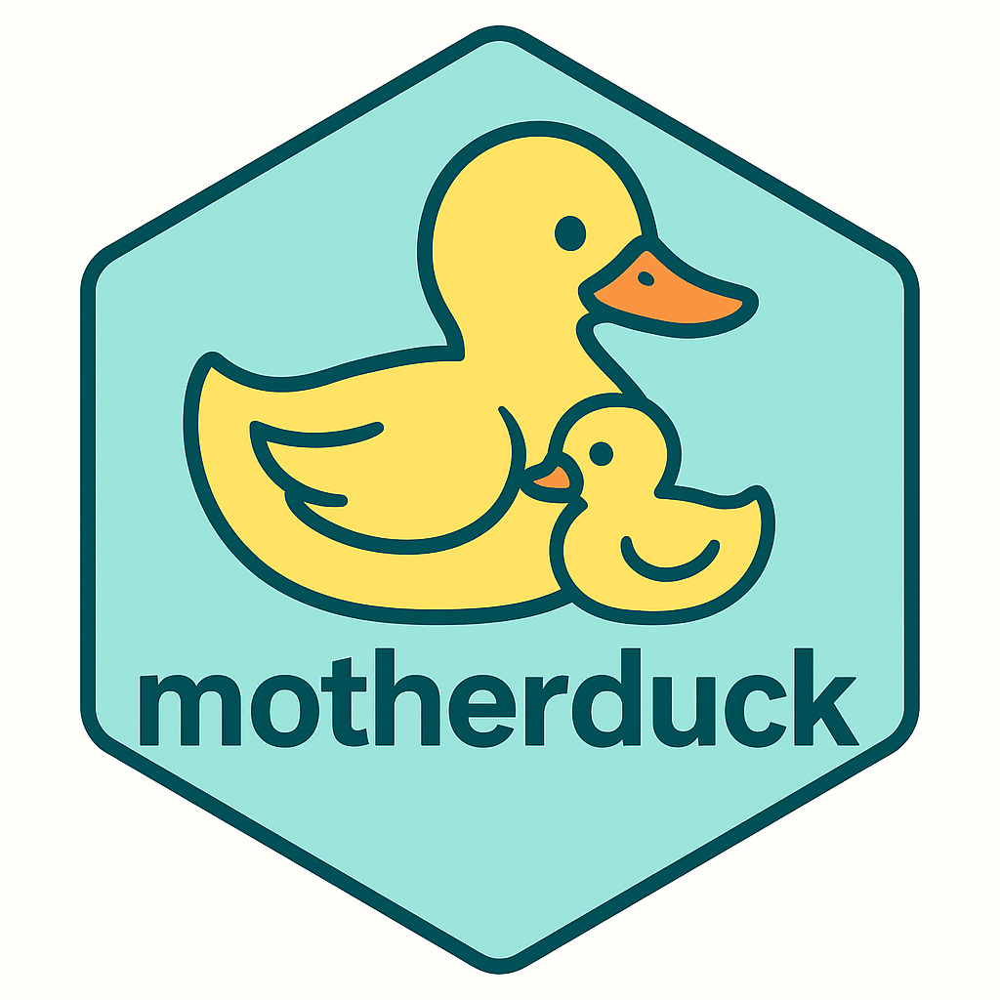
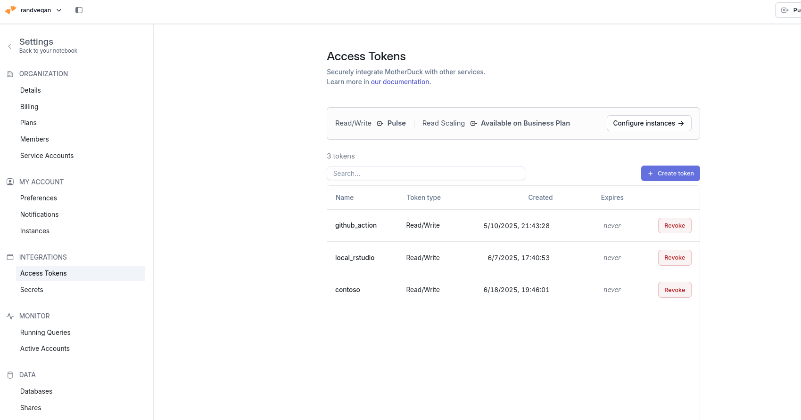

con <- connect_to_motherduck("MOTHERDUCK_TOKEN")My Project

Developer notes
- finish apis
- create the new create_* family of functions
- create tests with describes
- update documentation with more examples
My Project
This is WIP collection of utilities to help with the management, administration and navigation of duckdb database either locally on your computer or in the cloud via motherduck
Database management is incredibly easy in R with fantastic packages such as DBI and dbplyr, however some databases have specific extensions or utilities that are only aren’t readily accessible via this packages
MD simplifies these utilities and common database administration task with easy to understand syntax. MD is built upon DBI and returns a lazy DBI object so that you can further fully integrate your data with dbplyr
Eventually, I’ll use the learnings from this package to create a meta DB utilities package so that regardless if you’re in snowflake, DuckDB, redshift, etc you will have generalized functions that work across your database types
This is very much work in progress – I’ll eventually transition to the R7 object system but just want to get some usage first before deciding on the architecture and structure.
Please create an issue if you have any comments or requests or reach out if you have any feedback.
Overview of functions
functions that help you manage your connection and database metadata
connect_to_motherduck()will leverage your motherduck token to connect you to your motherduck instance (it will install motherduck extension if not created)load_extensions()will load a duckdb extensions either from an official repository or if you set the flag, a community repositoryinstall_extensions()will install various duckdb extensions from the official repositoryvalidate_*()collection of functions will just validate your connection and extension status
functions that help you see what is in your databases
pwd()prints the current database that you are “in”cd()will change your “root” database so that the list_* familiy of functions are relative to that rootlist_database()list the databases and their metadatalist_schema()list the schemas and their metadatalist_table()list the tables and their metadatalist_view()list the views and their metadata
functions that will help you read data into duckdb or motherduck
read_httpfs()will read httpfs file formats directly into duckdbread_parquet()will read parquet file formats directly into duckdbread_excel()will read excel files directly to your database
functions that will help you create or replace databases, scehems, tables or views
create_or_replace_database()will take R data and create a database with your datacreate_or_replace_schemas()will take R data and create a schema with your datacreate_or_replace_view()will take R data and create a views with your datacreate_or_replace_table()will take R data and create a tables with your datadrop_table()will delete a table from your databasesfunctions to help you understand your data
summary()will summarize your table or view’s data
What do I need to use this?
- duckdb package installed on your computer
- Optional: If you want to store your data in motherduck, then you need your own motherduck account and an access token which can be saved to your R environment file with
usethis::edit_r_environ() - data that you want to upload to
Whats the difference between Motherduck and Duckdb?
Duckdb is a database that you can deploy and run either temporary or permanently in your computer. If you run it via your local computer, it is only available on your computer
Motherduck is a cloud based deployment of duckdb which means you can save your data in the cloud and then access it locally via your database
Most core functions in this package work for both
It is just a question if you want you data to be access only locally on your computer or if you want to be able to access it remotely via the cloud
Lets see the package in action
Create a duckdb instance and Connect to your motherduck account
When creating a duckdb database, you have three options
- A temporary instance that exists in your local computer
- A permenant instance that exists in your local computer
- A cloud-based instance through motherduck
If you want to set up a local instance you can easily do that with the md package or you can you just DBI and duckdb package as well, there’s no real advantage to the md package
Simply clarify the type argument:
tempfor a temporary filefilelocation to a new or existing database filemdfor your motherduck account
You can validate if you are connected to motherduck vs. creating a local duckdb instance through the 0.778362676966935, 0.587813591584563, 0.59630852821283, 0.0196046924684197, 0.644733981695026, 0.482760228682309, 0.0177516404073685, 0.551682171877474, 0.281603625044227, 0.960781309520826
validate_md_connection_status(.con)When connecting to motherduck there are a number of configuration options available, you can reference them via the md::config which will pull a list of the default values
To change these, simply edit the configuration options you want and then pass this as an argument
config <- md_config
config$allow_community_extensions <- "true"
con <- connect_to_motherduck("MOTHERDUCK_TOKEN")Congratulations, you’ve set up your duckdb database!
Now let’s learn some duckdb specific adminstration functions
Database adminstrative functions
list_extensions()
install_extensions()
load_extensions
validate_install_status
validate_load_status
show_duckdb_settings()
These are a collection of motherduck specific database utilities to help you list, install and load duckdb extensions
the full list of extensions is available via duckdb community store are listed here
the
list_extensions()will list duckdb extension from the community store and list their status, install or loadedyou can use
install_extensions()to install a new exnsion – this will also automatically load the extensionIf the extension is already install you can use xx
list_extensions(con)# md::install_extensions(con,"fts")
# validate_extension_load_status(con,extension_names = "motherduck")
# validate_extension_install_status(con,c("excel","arrow"),return_type = "msg")
how to create a motherduck account and access token?
- go to motherduck and create an account, free options are available
- Go to your user name in the top right, click settings then click access tokens
- Click create token and then name your token and copy the token code
- You will need this token to access your account
- If you want to access it via R then simplest way is to save your access code as a variable in your r environment
- Simply leverage the {usethis} function
edit_r_environ()to set your access code to a variable and save it – this is one time activity - To check if your correctly saved your variable then you can use the Sys.getenv(“var_name”) with “var_name” the named you assigned your access token to
- Going forward, if you want to access your token you don’t need to re-type the access token, simply remember your variable name
First you will need a motherduck account, which has both free and paid tiers
Once you’ve created an account, simply, go to your settings and click ‘Access Tokens’ under your ‘Integrations’
Keep this secure and safe as this lets you connect to your online database to read or write data
Open R and use the
usethis::edit_r_environ()function to put your motherduck token as a variable in your enviornment profile- MOTHERDUCK_TOKEN=‘tokenID’
From there you can use the
connect_to_motherduck("MOTHERDUCK_TOKEN")This will use the pool library to create a connection to your mother duck instance
